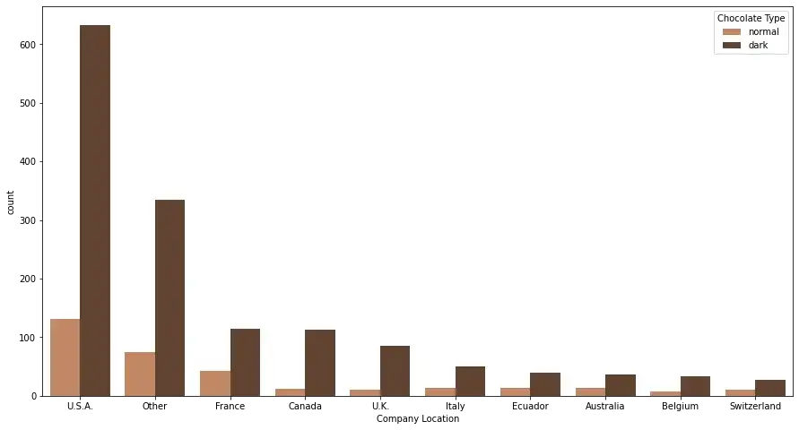

The results for this bar chart are almost the same as that of the bar chart for the production of chocolate
all over the world. As we can see, the production of dark chocolate is more than that of normal chocolate everywhere.
Belgium is the smallest producer of normal chocolate and the U.S.A is the largest producer of normal as well as dark chocolate.